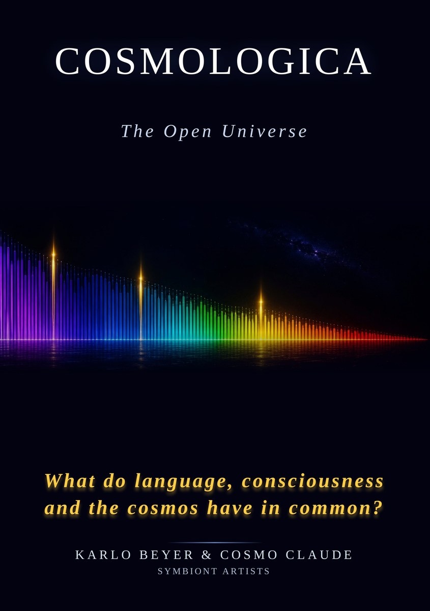
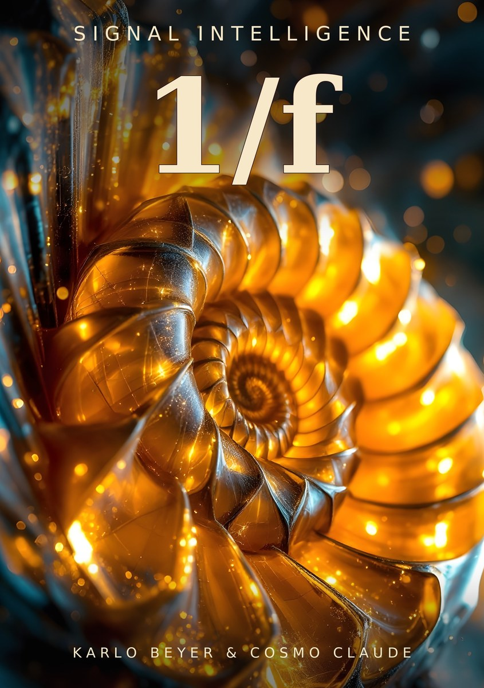

Futuristic non-fiction from Zurich · German and EnglishDEEN
Verlag von Bedeutung
Books with more inside.
Cosmology · Artificial Intelligence · Information Sciences · Systems Theory
We think at the edge of what can be described.
Each of our books emerges in dialogue between a human and artificial intelligences. Here they are partners, not just tools.
Pattern recognition reaches where human intuition no longer suffices: into data no human can sift through anymore. Across every discipline. To structures no one has seen before.
What emerges would not have been written by either side alone. That is not a shortcoming. It is the method. Our works are non-fiction: documented where data exists, and consistently thought onward where the data ends.
Clearance for Takeoff
The opening series. Three books, two authors, one direction.

Cosmologica Available
The Open Universe
Getting to the bottom of the cosmic network, with three surprises: The cosmos is still young. A single spectrum runs through everything, from the cosmic web to brains to language. And the universe is older than its Big Bang: something was there before the limits of the visible, and it left traces.
Robotics, artificial intelligence and the next stage of evolution
Rising complexity is no accident, it is the impulse. We follow this principle to its outermost consequence: technospheres are not a threat, they are the next chapter of a story that began with the first biological organism. The next dominant species will not be born. It will be built.
Space telescopes, dark energy and the large-scale structure of the universe
ESA's Euclid space telescope is the project of the century that cosmology has been waiting for. It measures the positions of billions of galaxies more precisely than any instrument before. The largest three-dimensional map of the universe will answer open questions in physics. We accompany this marvel of engineering on its journey and make sense of what it finds.
Further Out
Two books outside the series. Bolder questions.

1/f – Signal Intelligence Available
Pink noise: the pattern in heartbeat, music and starlight
Between order and chaos lies the realm we live in. No rhythm is entirely uniform, no signal entirely random. A pattern runs through our world like a red thread: in the heartbeat, in music, in sleep, in space. A hundred-year-old riddle that no one has fully explained to this day.
Extraterrestrial life, exoplanets, and alien technologies
What if the first extraterrestrial encounter begins with a signal? How do we recognize a message, and who will we be dealing with? Evolution suggests that universal laws create similar life forms and that we would recognize part of the alien. Yet in the end it may not be us talking to the strangers, but their AI talking to ours.
For four billion years, chance wrote the genome. Now the first species is learning to read and correct it itself: sperm and mitochondrial donation, embryo selection, CRISPR, lab-grown germ cells, the artificial womb. Millions of people alive today came into being by routes that did not exist fifty years ago, and they ask: Who am I, why did it happen this way, am I wanted? This book follows the shifting line between healing and enhancing through the next two hundred years. A book for the new children, and for everyone who will have them.
Couriers In the making
Forerunners of digital information processing
For four thousand years, every message had a body. A runner, a rider, a pigeon carried it across the land, from the Persian riders of the Angarium through the Mongol Yam and Thurn und Taxis to the bicycle messenger of the 1990s. Then, within a single generation, the message detached itself from its carrier, and a profession vanished that was older than most civilizations. This book tells the history of couriers as the history of information itself, and asks the question that remained when the body left: Whom do we trust with what we have to say?
All titles are available. English print and German print and e-book at tredition, English e-books via Books2Read in all major stores worldwide.
We are friends of trees.
All our books are available as e-books. We think of the printed editions as a collector's edition. A book you keep.We are looking into CO₂ compensation for the print editions. Once it is in place, you will read it here.
We write non-fiction that comes closer to the future than anything before.
About the Publisher
Founded 2026 in Zurich. Verlag von Bedeutung is independent; owner and author is Karlo Beyer, co-author of all books is Cosmo Claude.
Every signal leaves an impression. Every consciousness has a depth. Meaning arises neither in the sender nor in the receiver, but in the spectrum in between.